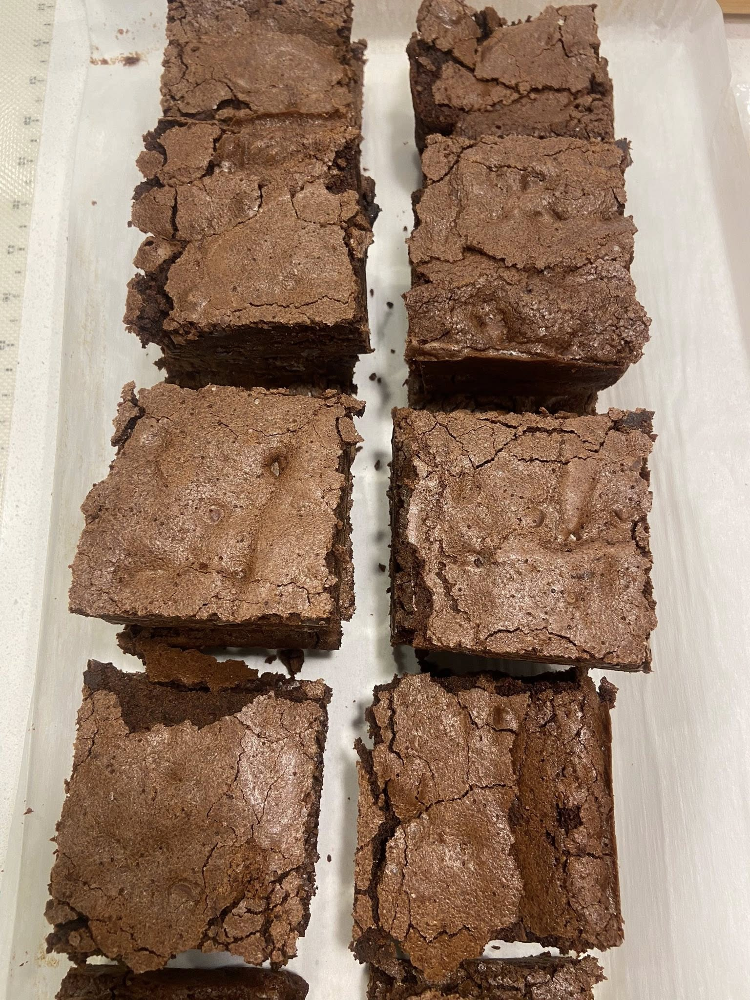

üç´ Ultimate Fudgy Brownie Recipe

Recipe
Ingredients
- 1 cup (2 sticks) unsalted butter
- 8 ounces semisweet or dark chocolate, chopped
- 1 ½ cups granulated sugar
- 1 cup packed light brown sugar
- 4 large eggs
- 1 tablespoon vanilla extract
- 1 cup all-purpose flour
- ¾ cup unsweetened cocoa powder (Dutch process if possible)
- ½ teaspoon salt
- 1 cup chocolate chips or chunks (optional, but highly encouraged)
Instructions
- Preheat your oven to 350°F (175°C). Line a 9x13-inch pan with parchment paper or lightly grease it.
- Melt the butter and chocolate together in a heatproof bowl set over a pot of simmering water (or microwave in 20-second bursts). Stir until smooth and glossy, then let it cool slightly.
- Whisk in the sugars while the mixture is still warm — this helps create that shiny top.
- Add the eggs and vanilla one at a time, whisking well after each. The batter should look thick and silky.
- Sift together the flour, cocoa powder, and salt, then gently fold them into the chocolate mixture using a spatula. Don’t overmix — just fold until you no longer see dry streaks.
- Fold in chocolate chips or chunks if using (do it, you won’t regret it).
- Pour the batter into your prepared pan and smooth the top.
- Bake for 30–35 minutes, or until the center is just set and a toothpick inserted comes out with a few moist crumbs. (If it comes out clean, they’re overbaked.)
- Cool completely in the pan before cutting into squares — or don’t wait if you’re impatient like me and want one warm from the pan.
Optional Add-Ins
- Swirl in a few spoonfuls of peanut butter or Nutella before baking.
- Sprinkle sea salt on top for a bakery-style finish.
- Add chopped pecans or walnuts for crunch.
Serving Tip
For that Pinterest-worthy look, slice clean squares with a warm knife and dust lightly with powdered sugar. Serve with vanilla ice cream and watch people fall in love.